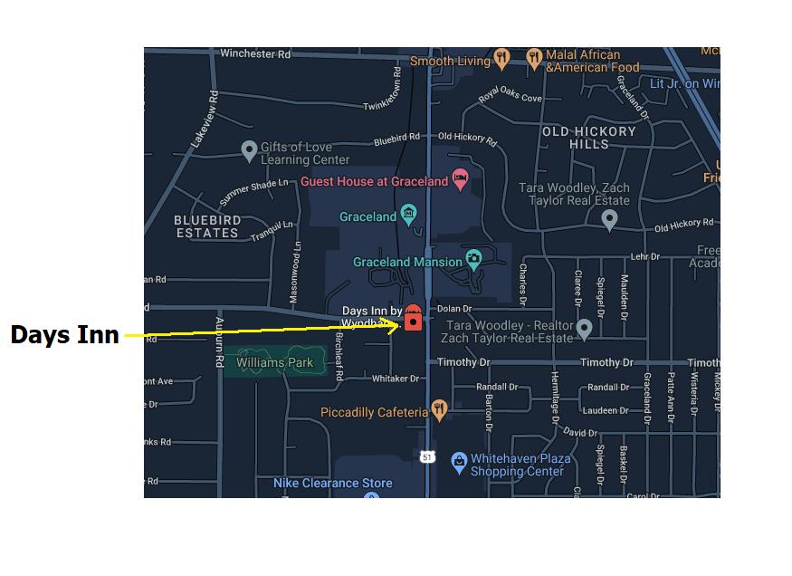
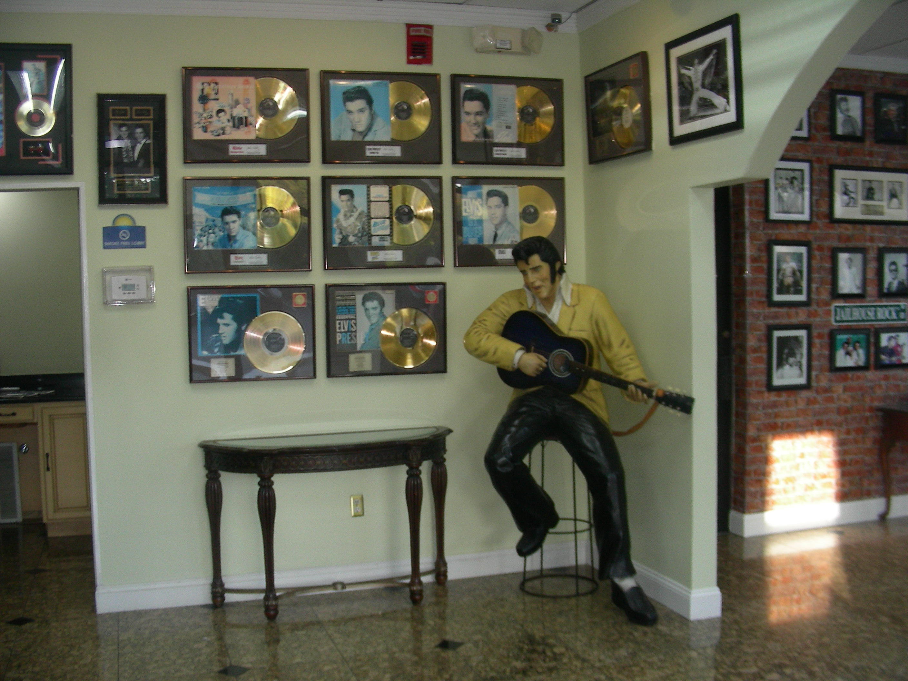
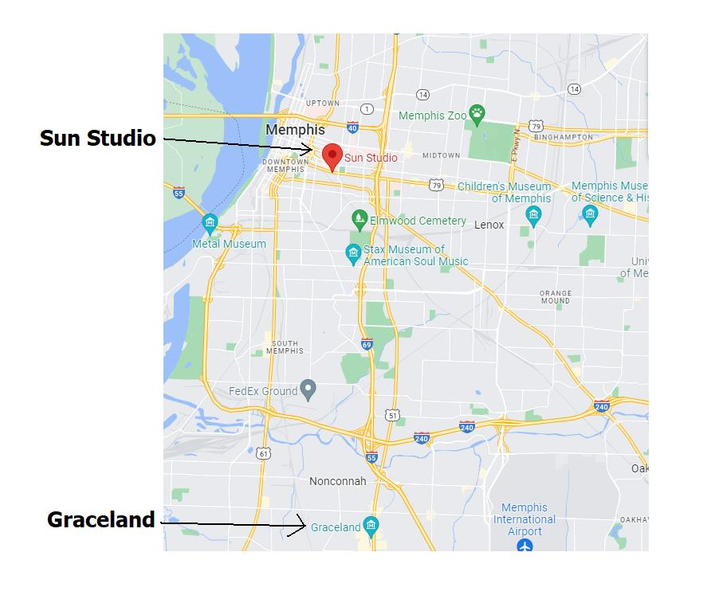
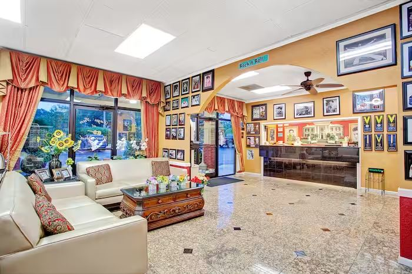
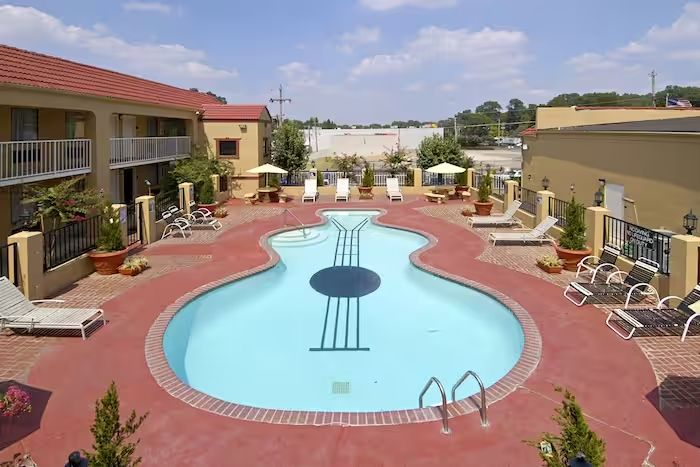
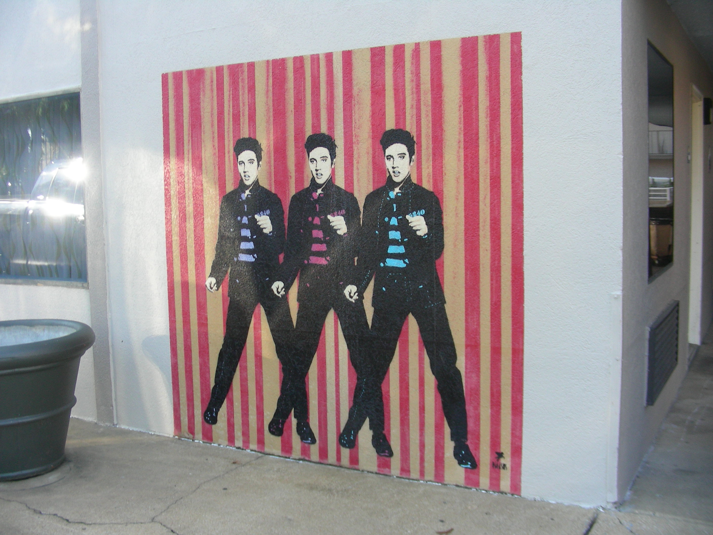

Day 21 Saturday Nov 12 392 miles
Henryetta, OK to Memphis, TN
Blues City Cafe Catfish and Ribs and Music Blind Mississippi Morris
Memphis Bound
We left Henryetta, Oklahoma, anxious to get to Memphis, Tennessee. We love Memphis for the music, atmosphere and food. We’d been there many times before and know our way around.
We originally had hoped to get a room in downtown Memphis to be close to the clubs and restaurants. The lodging downtown is somewhat pricey, but we figured it would be a good ending to our adventure. Unfortunately, since we didn’t book anything in advance, we had a limited selection of pricey rooms available. The rooms available really weren’t all that close to the stuff we wanted to do, and none had a King bed. We normally don’t care about the size of the bed, but when you’re paying top dollar, you kind of hope you get what you want. So, we found a room outside of downtown. We weren’t sure where this Day’s Inn was, but once getting there, we were pleasantly surprised.
Graceland – Home Of The King
Elvis Presley; what can you say? No matter what you think of Elvis, his legacy can never be denied. His story is the real deal, unlike a lot of Celebrates today. He was a dirt poor southern boy from Memphis, Tennessee that really was discovered (not manufactured) and became the greatest Entertainer, probably, of all time. "I don't sound like nobody.”
No one really knows how many records Elvis has sold. It’s estimated to be over a billion. He starred in 31 feature films in 13 years, all which were successful (all made money). That’s 2.38 movies a year.
He became discouraged in the movie business, wanting more dramatic roles. Thus, he successfully made his musical / performing comeback and went on to tour the United States, and become one of the most legendary performers in Las Vegas, Nevada. Then, Elvis Presley died at the young age of 42.
After his death, Graceland (his house, home and property) became a museum open to the public for tours and memorabilia sales. I consider Elvis and Graceland to be an important part of our American History; right up there with the Grand Canyon, Statue Of Liberty, Route66, etc. I highly recommend a visit to Graceland. Also, if you want to see where Elvis started his career you can take a tour of Sun Records.
Needless to say, I’m a fan of Elvis Presley. Dorreen and I have been to Graceland several times, so we had no desire to tour Graceland again. But you can imagine how surprised we were when the Garmin drove us to our Day’s Inn right across the street from Graceland. It was great.



D   ays Inn At Graceland
This Days Inn is very cool. The lobby is all Elvis. Gold records, pictures of all types line the walls. There is a life size statue of Elvis, and a guitar shaped swimming pool to add to the nostalgia.
On the outside there is mural of Elvis from the movie Jailhouse Rock. This is a Days Inn, so the rooms are very reasonable. This is a perfect base for any Elvis fan to explore the area and surrounding Memphis.
Once settled in, we headed north for dinner and entertainment at the famous Blues City Cafe.